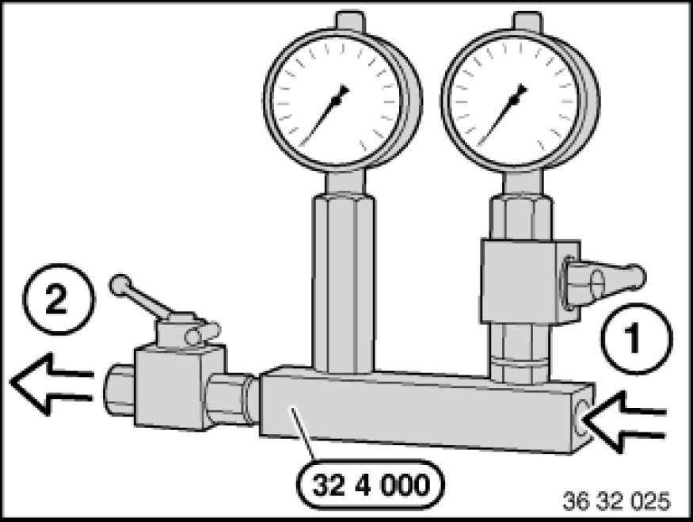
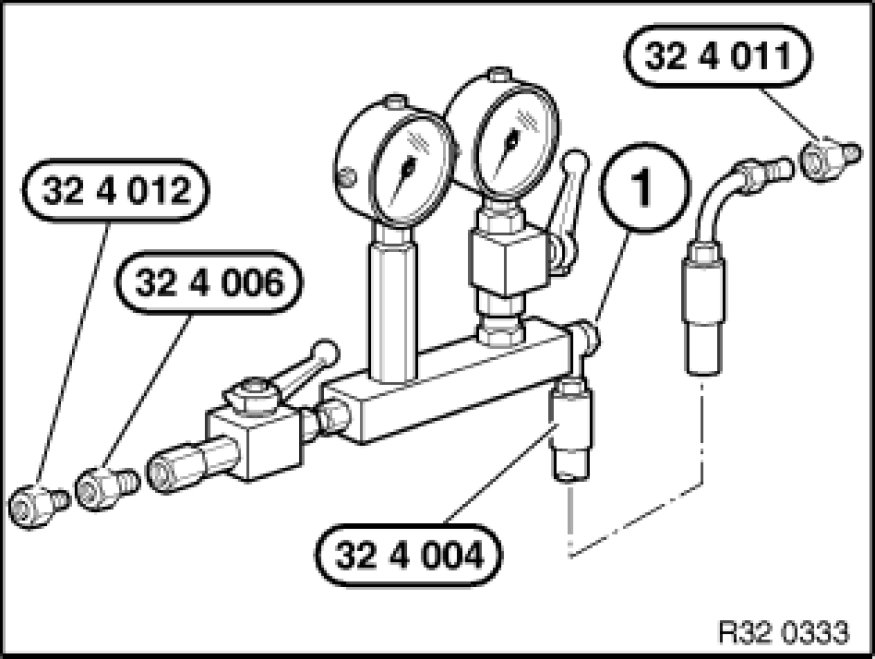
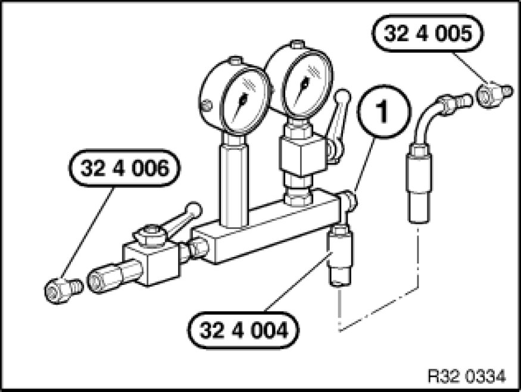
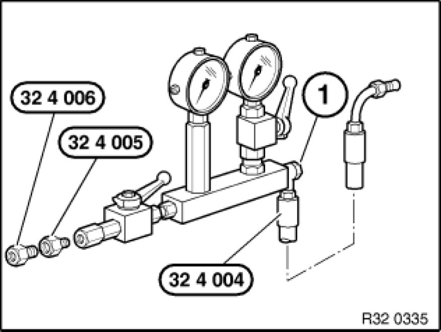

Instructions for Using Special Tool 32 4 000
32 41 ... - Instructions for using special tool 32 4 000

Special tools required:
- 32 4 000 32 4 000 Fixture
- 32 4 004 32 4 000 Fixture
- 32 4 005 32 4 000 Fixture
- 32 4 006 32 4 000 Fixture
- 32 4 011 32 4 000 Fixture
- 32 4 012 32 4 000 Fixture

Depending on the pressure hose connection on the pump, the special tool 32 4 000 must be assembled.
1 = Connection, pump
2 = Connection, steering gear

[EMPHASIZE] Pressure hose connection to pump with M14 x 1.5 banjo bolt:
Screw special tool 32 4 004 32 4 000 Fixture with M14 x 1.5 banjo bolt (1) and 2 sealing rings to special tool 32 4 000 32 4 000 Fixture.
Screw special tool 32 4 011 32 4 000 Fixture onto pump and connect special tool 32 4 004 32 4 000 Fixture.
Screw special tools 32 4 006 32 4 000 Fixture / 32 4 012 32 4 000 Fixture onto special tool 32 4 000 and connect pressure hose with M14 x 1.5 banjo bolts and 2 sealing rings.

Pressure hose connection to pump with M16 x 1.5 banjo bolt:
Screw special tool 32 4 004 32 4 000 Fixture with M14 x 1.5 banjo bolt (1) and 2 sealing rings to special tool 32 4 000 32 4 000 Fixture.
Screw special tool 32 4 005 32 4 000 Fixture onto pump and connect special tool 32 4 004 32 4 000 Fixture.
Screw special tool 32 4 006 onto special tool 32 4 000 32 4 000 Fixture and connect pressure hose with M16 x 1.5 banjo bolt and 2 sealing rings.

Pressure hose connection to pump with M16 x 1.5 union screw:
Screw special tool 32 4 004 32 4 000 Fixture with M14 x 1.5 banjo bolt (1) and 2 sealing rings to special tool 32 4 000 32 4 000 Fixture.
Connect special tool 32 4 004 32 4 000 Fixture to pump.
Screw special tools 32 4 006 32 4 000 Fixture / 32 4 005 32 4 000 Fixture onto special tool 32 4 000 and connect pressure hose.